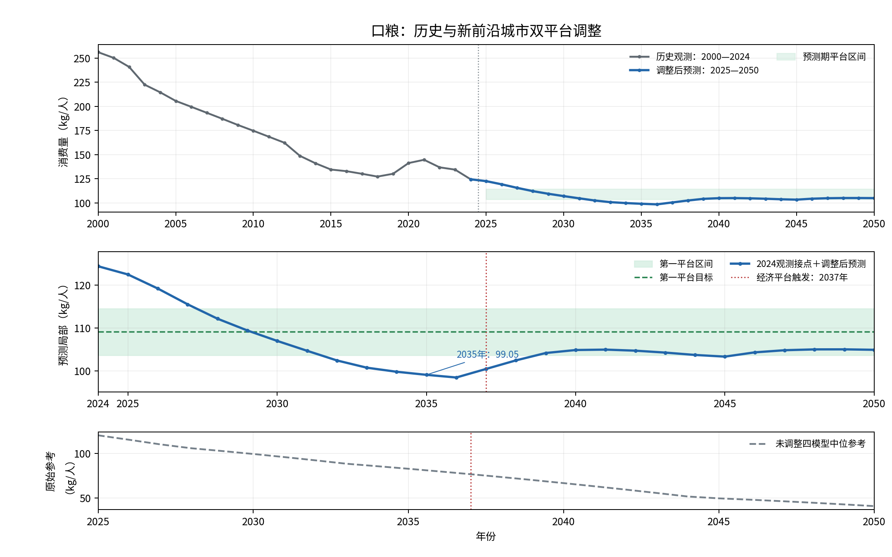
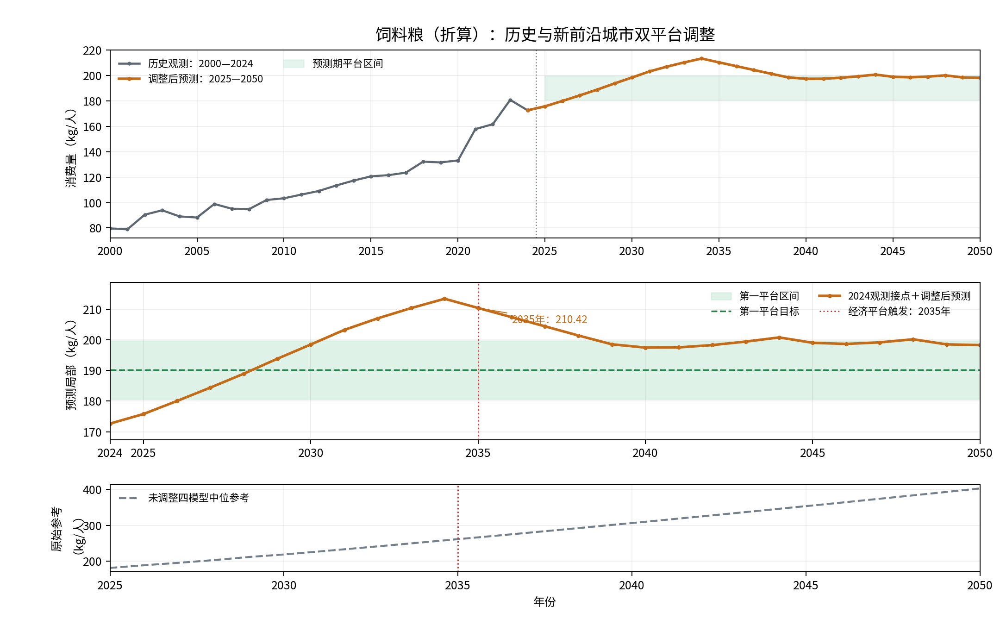

平台调整 · 新前沿双平台
新平台选取与总粮食消费量
新前沿地区双平台情景 · 在家口粮 / 饲料粮选取，以及含外出还原后的全国总粮食消费量（2024—2035）
一、新平台选取
前沿样本取省级经济聚类第 1 类五地区：北京、上海、江苏、浙江、广东（旧六地区方案中的福建不在新样本中）。
口粮平台值
109.10
kg/人 · 五地区 2024 年观测均值
口粮平台区间
103.65—114.56
均值 ±5%
饲料粮平台值
190.20
kg/人 · 四地区五年最高值均值
饲料粮平台区间
180.69—199.70
均值 ±5%
口粮取值
五地区各取 2024 年口粮观测值，再算术平均。
- 上海 93.6 · 北京 86.3 · 广东 105.8
- 江苏 131.3 · 浙江 128.5 → 均值 109.1000
饲料粮取值
各地区取 2020—2024 年最高值；若最高值落在 2024 年则整区排除（浙江排除）。纳入：北京、上海、江苏、广东。
- 上海 175.53（2021）· 北京 142.19（2021）
- 广东 237.88（2023）· 江苏 205.18（2023）→ 均值 190.1950
平台触发与 2050 调整值
口粮：粮食平台 2027 · 经济平台 2037 · 首次平台化 2041 · 2050 调整值 104.89 kg/人
饲料粮：粮食平台 2025 · 经济平台 2035 · 首次平台化 2041 · 2050 调整值 198.29 kg/人
区间规则
平台值 = 纳入地区对应值均值；下限 = ×95%，上限 = ×105%。区间为软约束，单年调整值可能暂时越过边界。第二平台用收入加消费支出经济指标到达年份。

口粮：历史观测 + 新前沿双平台调整预测

饲料粮（折算）：历史观测 + 新前沿双平台调整预测
二、总粮食消费量预测（2024—2035）
在家口粮 / 饲料粮按全国外出占比还原含外出量，再除以三法等权平均合计占比得到人均总粮食；× 全国人口 → 全国总量（万吨）。2024 为历史观测，2025—2035 为新平台预测。
2035 · 总粮食·中
—
万吨 · 中人口方案
2035 · 总粮食·高
—
万吨 · 高人口方案
2035 · 总粮食·低
—
万吨 · 低人口方案
2035 · 人均总粮食
—
kg/人（三方案人均相同）
| 年份 | 在家口粮 | 在家饲料 | 含外出口粮 | 含外出饲料 | 人均总粮食 | 总量·中 | 总量·高 | 总量·低 |
|---|
人均单位 kg/人；总量单位万吨。2024、2025 年三方案人口相同，故三列总量相同。2026—2035 分中 / 高 / 低人口方案。